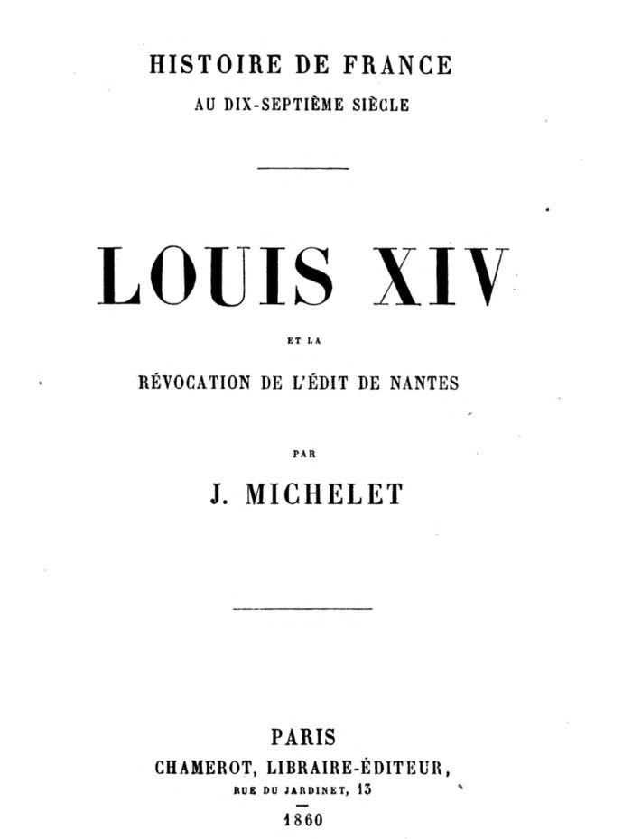
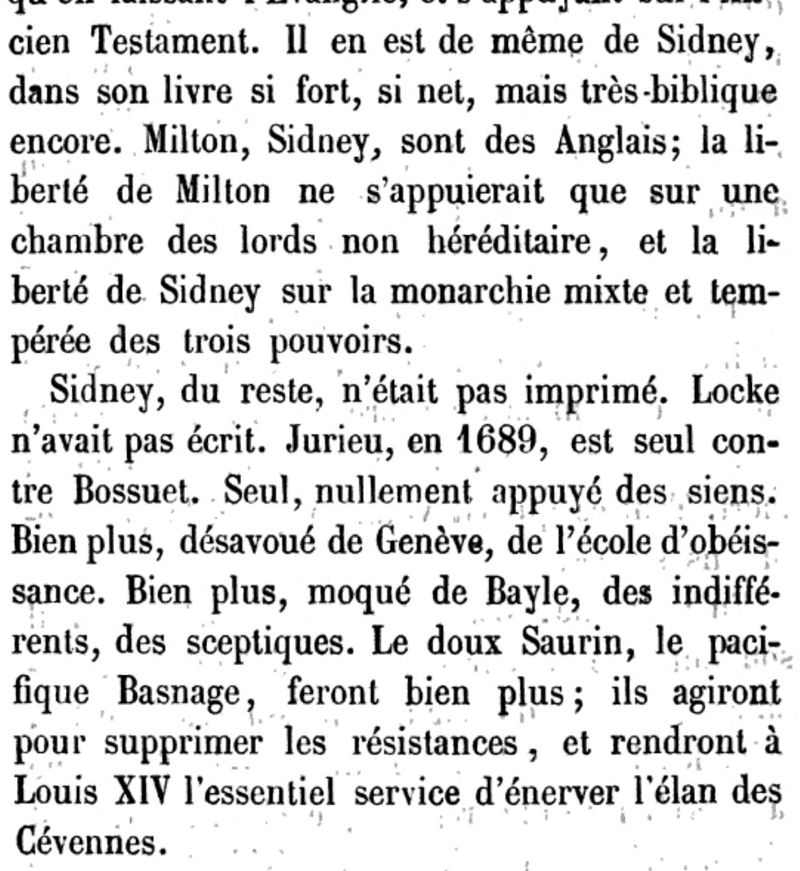
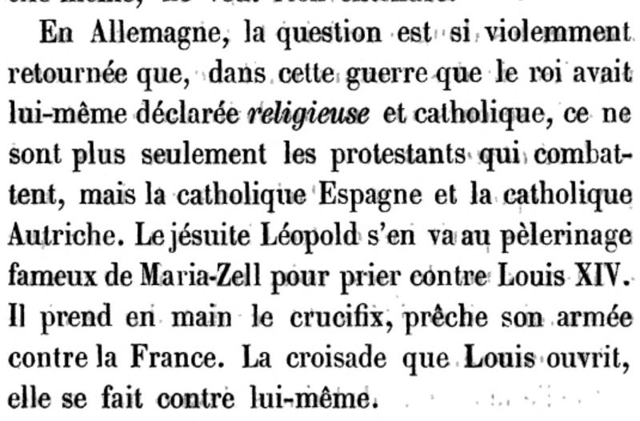

Jurieu alone; Saurin and Basnage for obedience (p. 432)
French: 1860, p. 432, scan n455, under the years 1689–1690. Highlighted: what Lecky’s note refers to.

That is what had stopped Grotius. He established the right of resistance for the man, but not for the Christian, who is bound by the Gospel. Milton finds his feet again only by leaving the Gospel and leaning on the Old Testament. So too Sidney, in his book, so strong, so clear, but still very biblical. Milton and Sidney are Englishmen; Milton’s liberty would rest only on a non-hereditary House of Lords, and Sidney’s on the mixed monarchy, tempered by the three powers.
Sidney, besides, was not yet printed. Locke had not yet written. Jurieu, in 1689, stands alone against Bossuet. Alone, not supported at all by his own side. Worse, disowned by Geneva, by the school of obedience. Worse still, mocked by Bayle, by the indifferent, by the sceptics. The gentle Saurin and the peaceable Basnage will do much more: they will act to suppress resistance, and will render Louis XIV the vital service of sapping the drive of the Cévennes.
Translation: this edition’s draft.
Original French
Cela avait arrêté Grotius. Il établit le droit de résistance pour l’homme, mais non pour le chrétien, lié par l’Évangile. Milton ne reprend pied qu’en laissant l’Évangile, et s’appuyant sur l’Ancien Testament. Il en est de même de Sidney, dans son livre si fort, si net, mais très-biblique encore. Milton, Sidney, sont des Anglais; la liberté de Milton ne s’appuierait que sur une chambre des lords non héréditaire, et la liberté de Sidney sur la monarchie mixte et tempérée des trois pouvoirs.
Sidney, du reste, n’était pas imprimé. Locke n’avait pas écrit. Jurieu, en 1689, est seul contre Bossuet. Seul, nullement appuyé des siens. Bien plus, désavoué de Genève, de l’école d’obéissance. Bien plus, moqué de Bayle, des indifférents, des sceptiques. Le doux Saurin, le pacifique Basnage, feront bien plus; ils agiront pour supprimer les résistances, et rendront à Louis XIV l’essentiel service d’énerver l’élan des Cévennes.
Lecky (vol. II, ch. V, text at note 107): “Jurieu strenuously asserted the first right; and although Saurin is said to have taken the opposite view …” Lecky reports Saurin’s view as hearsay; Michelet presents it as fact and adds Basnage, and goes further, crediting both with helping the king against the Camisards. (“Basnage” is Jacques Basnage, the Huguenot pastor at The Hague: our identification.)
A crusade turned against its maker (p. 203)
French: 1860, p. 203, scan n228, under the years 1674–1675, the Dutch war. Lecky’s note 5 gives no page; this is one of several places where Michelet calls the war a “croisade” (also the “croisade hollandaise et anglaise” planned in 1670, and, looking back, the “croisade religieuse” that came to nothing). Highlighted: the religious character Louis gave the war.

In Germany the question is so violently reversed that, in this war which the king had himself declared religious and Catholic, it is no longer only the Protestants who fight, but Catholic Spain and Catholic Austria. The Jesuit Leopold goes on the famous pilgrimage to Mariazell to pray against Louis XIV. He takes the crucifix in hand and preaches his army against France. The crusade that Louis opened is now being fought against himself.
Translation: this edition’s draft. “The Jesuit Leopold” is Michelet’s gibe at the Emperor Leopold I.
Original French
En Allemagne, la question est si violemment retournée que, dans cette guerre que le roi avait lui-même déclarée religieuse et catholique, ce ne sont plus seulement les protestants qui combattent, mais la catholique Espagne et la catholique Autriche. Le jésuite Léopold s’en va au pèlerinage fameux de Maria-Zell pour prier contre Louis XIV. Il prend en main le crucifix, prêche son armée contre la France. La croisade que Louis ouvrit, elle se fait contre lui-même.
Lecky (vol. II, ch. V, text at note 5): “The invasion of Holland by Louis XIV. was near becoming” a religious war; the note sends the reader to “Michelet, Louis XIV.” for “the religious character Louis XIV. tried to give the invasion of Holland”. Michelet’s answer is that the attempt backfired: the Catholic powers joined the Protestants against him.
Further down the rabbit hole
Sources that Lecky cites in the notes next to the ones that cite this page.
- Sarpi, Historia dell’origine, forma, leggi ed uso dell’ufficio dell’InquisizioneA Venetian friar on how churchmen changed their tune about princes
- Bianchi, Traité de la puissance ecclésiastiqueAn Ultramontane friar on when a people may depose its king, and the Scot who ‘sold his pen’ to James I
- Mably, Observations sur l’histoire de FranceTwo popes excommunicating each other: how the Great Schism taught Europe to doubt
- Knox, The First Blast of the Trumpet against the Monstrous Regiment of WomenThe Scottish reformer’s case that no woman may rule
- Mignet, Antonio Perez et Philippe II“I would cut off God the Father’s nose”: how the Inquisition caught a king’s fallen secretary
- Toland, Anglia LiberaA freethinker argues that Protestantism needs free states to survive


Backlinks
Every place in Rationalism in Europe that links to this page (generated automatically when the site is built).